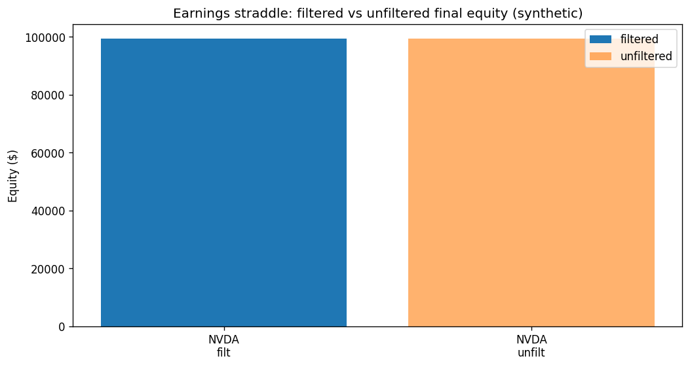

A long straddle into scheduled earnings is a bet that the realized move beats the implied one. Owning that bet indiscriminately loses to the volatility risk premium; the only edge is the selection rule that decides when not to play.
Compiled 2026-06-08 · SPY/AAPL/MSFT/AMZN/NVDA daily, 2023–2024 · Phase-1 synthetic surface
Scheduled earnings announcements are the cleanest volatility events a retail trader can position around: the date is known weeks ahead, and a single report compresses a quarter of information into one overnight gap. The textbook expression is a long at-the-money straddle — a call and a put at the same strike and expiry — bought before the report and sold after, profiting from a large move in either direction. We complete the options strategy that Poudel's (2025) small-cap dissertation specifies and then explicitly declines to implement, and in doing so make one point precisely: buying earnings volatility is, on average, a losing trade, because the implied move priced into the straddle already embeds a positive volatility risk premium and is then crushed the instant the announcement removes the uncertainty it was charging for.
The strategy's only source of edge is therefore not owning the straddle but selecting which earnings to own it for. We forecast each event's realized move from the name's own past earnings reactions and enter only when that forecast exceeds the straddle's implied move by a margin, \(\widehat{m}_{\text{exp}}>m_{\text{imp}}\cdot k\) with \(k>1\). The filter, not the option, is the alpha. We pair it with a non-parametric validation battery — a centered bootstrap test for the per-trade mean and a Benjamini–Hochberg false-discovery correction across the candidate universe — precisely because a handful of earnings trades on a hand-picked watchlist is exactly the setting in which spurious edges are manufactured.
The model runs on a deliberately synthetic volatility surface (an elevated pre-earnings implied vol that collapses to a lower post-earnings level), so the Phase-1 numbers test mechanism, not tradeability. Over 2023–2024 the filter admitted only NVDA from a five-name watchlist; the four large-caps were sat out. Across NVDA's seven fired earnings trades the synthetic straddle returned a per-trade expectancy of \(-\$30.79\), a profit factor of \(0.82\), and a bootstrap \(p\)-value of \(0.825\) — a mean indistinguishable from zero whose \(95\%\) confidence interval, \([-\$276,\,+\$250]\), straddles it comfortably. No name survives the FDR threshold. The result is the honest one the design predicted: the selection filter is necessary to avoid the premium, but on synthetic, crush-modelled data it is not sufficient to overcome it.
Keywords. earnings announcements, implied move, long straddle, volatility risk premium, IV crush, selection filter, bootstrap inference, Benjamini–Hochberg FDR, event-driven volatility.
Every other options strategy in this catalogue trades volatility as a continuous quantity. An earnings straddle trades it as a scheduled discrete event, and that changes the economics entirely. The market knows the report is coming; it bids implied volatility up in the days before, building a premium that prices the expected overnight jump; and it lets that premium evaporate the moment the report lands and the uncertainty resolves. A trader who simply buys the straddle is buying the most expensive insurance in the equity market at the exact moment it is most expensive, and watching it lose value whether or not the stock moves. The interesting question is never "should I buy the earnings straddle" — almost always the answer is no — but "for which earnings, if any, is the implied move cheap relative to what the stock will actually do."
This paper takes the event-volatility strategy from Poudel (2025), Small-Cap Stock Trading Strategies for Retail Traders (SSRN 5921742), Strategy Family E. That work describes the long-strangle-around-earnings trade and then steps back from it: "For simplicity, this section focuses on equity-based event trading rather than options." Strategy E was also the dissertation's weakest result (an out-of-sample Sharpe of 0.54, the lowest of its six families) — and that is not a coincidence to paper over but the central fact to build around. Naïve long earnings vol underperforms because the premium it pays usually exceeds the move it collects. We implement the options version the dissertation omitted, but with the selection discipline that its own results imply is mandatory.
Our claim, as with the delta-hedged paper that precedes this one, is not that the strategy prints money. It is that the strategy's profitability is conditional and forecastable: it lives or dies on whether a simple forecast of the realized earnings move can beat the implied move embedded in the straddle, net of an unforgiving four-legged transaction cost and a modelled volatility crush. We build the mechanism, we state exactly where the theory is sound and where it is fragile, and we validate the small-sample result with inference tools chosen to resist the very overfitting this kind of strategy invites.
Let \(S_t\) be the underlying close on bar \(t\) and \(E\) the scheduled earnings datetime. A long straddle is one long call and one long put, struck together at the money and sharing the nearest listed expiry strictly after the report. With the strike snapped to the nearest grid increment, \(K=\operatorname{snap}(S_t)\), and both legs priced by Black–Scholes–Merton at an implied volatility \(\sigma\), the per-share premium is the sum of the two,
\begin{equation} P_{\text{straddle}}(S,K,T,\sigma) = C_{\text{BS}}(S,K,T,\sigma) + \mathrm{Put}_{\text{BS}}(S,K,T,\sigma), \end{equation}and the position is delta-neutral at inception (an ATM call's \(+\Delta\approx+0.5\) is offset by the ATM put's \(-\Delta\approx-0.5\)), long gamma, long vega, and short theta on both legs. Its payoff at expiry is the familiar V: the holder profits if the underlying finishes far enough from \(K\) in either direction to recover the combined premium.
The single number that governs the trade is the breakeven width above, the implied move. For an ATM straddle it is well approximated by the premium as a fraction of spot,
\begin{equation} m_{\text{imp}} \;=\; \frac{P_{\text{straddle}}}{S} \;\approx\; 0.8\,\sigma\sqrt{T}, \end{equation}which is the option market's priced-in expected absolute move through expiry — explicitly the mean-absolute move \(\mathbb E|R|\), not the one-sigma move \(\sigma\sqrt{T}\) (the \(0.8\approx\sqrt{2/\pi}\) is the half-normal factor). Held through the announcement to a same-week exit, the straddle's profit-and-loss is, to first order,
\begin{equation} \Pi \;\approx\; M\cdot\big(\,|R_{\text{event}}|\;-\;m_{\text{imp}}\,\big)\;-\;\text{(theta + crush + costs)}, \end{equation}with \(M=100\) the contract multiplier and \(R_{\text{event}}\) the realized announcement return. The trade wins when the realized move clears the implied move by enough to cover the carry. Two forces make that hard, and both are structural rather than incidental.
The volatility risk premium. Implied volatility is, on average across names and time, a biased-high forecast of subsequent realized volatility — sellers of options demand compensation for bearing variance risk. Bakshi & Kapadia (2003) document that delta-hedged option positions earn negative average returns precisely because of this premium; Carr & Wu (2009) measure variance risk premia as robustly negative for the buyer. Around earnings the premium is at its largest: implied vol is bid up specifically to price the event. The long straddle is the leveraged long side of exactly this losing average bet.
The crush. The instant the report is released, the uncertainty the pre-earnings implied vol was charging for disappears, and implied vol collapses from an elevated pre-event level to a lower post-event one. The straddle's remaining time value — its vega — is repriced down at the new, lower vol the moment you would exit. This is the "IV crush," and it is why a stock can move and the straddle still lose: the intrinsic gain from the move is offset by the vega loss from the vol collapse.
Because owning the straddle is a losing average bet, the strategy's profitability must come entirely from declining most of them. We forecast each event's realized move from the name's own history: the mean absolute close-to-next-bar return across its last \(\ell\) earnings dates, using prior events only,
\begin{equation} \widehat{m}_{\text{exp}} \;=\; \frac{1}{\ell}\sum_{j=1}^{\ell}\bigl|R_{E_j}\bigr|,\qquad E_j < E, \end{equation}and we take the straddle only when this forecast exceeds the implied move by a margin governed by a single parameter \(k>1\):
On top of the k-gate sit hard no-trade filters that reject the event outright when the chain is untradeable: a non-positive or undefined implied vol, no listed expiry after the report, or a quoted half-spread wider than a cap. These are the operational safeguards of Poudel's Chapter 6, scoped to what Phase 1 can see.
An admitted event is traded on a strict, bar-counted schedule, deliberately independent of the calendar so that holidays and gaps do not misplace the legs. Entry is the third actual price bar before the earnings bar (T−3); exit is the first bar after (T+1). The legs are opened ATM at entry with a tenor placed beyond the exit, marked to market each bar by the engine, and closed at exit.
Frictions. A straddle is two legs, and the engine crosses a bid/ask spread on each — so the position pays the spread four times over its life (call and put at entry, call and put at exit). For a strategy whose entire edge is a few percentage points of move, this four-legged cost is not a footnote; it is one of the largest line items, and a realistic spread model is what keeps the backtest honest. Costs here are \(1.0\) bp fee plus \(0.5\) bp slippage per leg-crossing.
Sizing. A long option is defined-risk — the most you can lose is the premium — so position size is fixed-fractional against that premium: \(n=\big\lfloor (\text{capital}\cdot f)\,/\,(P\cdot M)\big\rfloor\) contracts for a risk fraction \(f\), with a cap on the number of concurrent open straddles. No stop-loss is needed below the premium floor; the option's own convexity is the risk control.
This model runs without any real options-chain data. In place of quoted marks it uses a synthetic EventVolSurface: a single elevated implied vol before the report (\(\sigma_{\text{pre}}=45\%\)) that crushes to a lower level after (\(\sigma_{\text{post}}=25\%\)), with the invariant \(\sigma_{\text{pre}}>\sigma_{\text{post}}>0\) enforced at construction. The realized move that the straddle actually collects comes from the true underlying bars (yfinance daily); only the volatility it is priced at is synthetic.
This buys clarity at the price of tradeability. The experiment can validate the full pipeline end to end — calendar → event selection → straddle construction → frictioned mark-to-market → validation report — and it can show the mechanism by which the crush erodes a long straddle. What it cannot do is measure a real edge: the entry premium and the crush magnitude are assumptions, not market observations, so a profit here would prove nothing and a loss here indicts the assumptions, not the market. The Phase-1 numbers below are therefore framed as a mechanism check, explicitly not tradeable. The real chain (Phase 2/3) is what turns the same code into a tradeable test.
The held-out window is the 502 daily bars of 2023–2024, run over a five-name watchlist (SPY, AAPL, MSFT, AMZN, NVDA). The selection filter admitted exactly one name. SPY and the three large-cap single names were declined: their muted realized earnings histories did not clear the \(k=1.2\) cushion over their implied moves. NVDA — the watchlist's high-volatility name — cleared it, with a forecast move of \(10.4\%\) against an implied move of \(7.5\%\) (threshold \(9.0\%\)), and was traded across its seven in-window earnings events.

Earnings-straddle Phase-1 synthetic results, NVDA, seven fired events, 2023–2024 (results/validation.json, metrics.json).
| Metric | Value | Reading |
|---|---|---|
| Trades fired (k-gate) | 7 | only NVDA cleared the filter |
| Win rate | 42.9% | fewer than half the moves beat the premium |
| Profit factor | 0.82 | < 1 — gross losses exceed gross wins |
| Expectancy / trade | −$30.79 | avg win $327.77 vs avg loss −$299.70 |
| Bootstrap mean P&L p-value | 0.825 | indistinguishable from zero |
| Bootstrap 95% CI | [−$276, +$250] | straddles zero — no detectable edge |
| FDR survivors (BH, α=0.05) | 0 of 1 | nothing survives multiple-testing control |
| Representative event Sharpe | −0.86 | synthetic, single-event mark |
The honest reading is the one the design anticipated. The selection filter did its job — it refused four of five names and only played the one with a genuinely elevated move history. But on synthetic data that explicitly models the crush, even the admitted trades returned a per-trade expectancy of \(-\$30.79\) and a profit factor below one, and the bootstrap cannot distinguish their mean from zero (\(p=0.825\); the \(95\%\) interval comfortably contains zero). The selection filter is necessary to avoid systematically overpaying for volatility; it is not, by itself, sufficient to extract a positive edge once the premium and the four-legged cost are charged. A strategy that reports this rather than a curve-fit positive is doing exactly what the validation harness exists to enforce.
Seven trades on a hand-chosen watchlist is the textbook setting for a spurious edge, so the inference is deliberately conservative. Two tools, ported from Poudel's Chapter 4 into the project's validation harness, do the work.
Centered bootstrap. Earnings P&L is fat-tailed, bimodal (a few large wins, many small losses), and scarce — Student's \(t\) is the wrong instrument. We test \(H_0:\ \mathbb E[\Pi]=0\) by resampling the per-trade P&L with replacement, centering the bootstrap distribution at the null, and reporting the share of resamples whose mean is at least as extreme as observed, smoothed as \((c+1)/(B+1)\). The \(p=0.825\) above says the observed losing mean is well within what pure noise would produce.
Benjamini–Hochberg FDR. When a watchlist is screened, each name is a hypothesis, and testing many inflates the chance that one looks significant by luck. The Benjamini–Hochberg step-up procedure controls the false-discovery rate: sort the \(p\)-values ascending and reject up to the largest rank \(i\) with \(p_{(i)}\le (i/m)\,\alpha\). Here no name clears it — a guard that, on a real multi-name run, prevents the one lucky ticker from being mistaken for a strategy. The harness also deflates the Sharpe for the number of configurations tried (Bailey & López de Prado, 2014), so a grid search cannot inflate the headline.
The Phase-1 loss is not a verdict that the trade can never pay — it is a verdict on the synthetic surface. There are concrete, theory-backed conditions under which a real-chain version of this exact machinery could earn:
In every case the load-bearing requirement is the same: a real implied move to compare the forecast against. That is the entire purpose of the deferred chain loader.
It is worth stating plainly which parts of the theory the model validates and which parts are fragile.
The phase-1 model is a mechanism, deliberately stripped to what free daily data and a synthetic surface allow. The decisive next step is the real options-chain loader (Phase 2/3): forward-snapshotting end-of-day chains for a liquid-earnings universe so that the implied move and the crush are observed, not assumed, at which point the same signal, sizing, and validation code becomes a tradeable test. Beyond that: replace the historical-move forecast with an IV-term-structure or skew signal; widen the universe to dozens of names so the FDR control has something to control; add the short-premium mirror that the variance risk premium argues is the favored side; snap expiries to listed weeklies and use the parsed BMO/AMC session timing (currently parsed but unused) to place entry and exit around the exact session. The honest summary is that this paper builds the apparatus and proves it works end to end on a synthetic surface — and reports, without flinching, that buying earnings volatility loses to the premium unless a real chain reveals a move the market genuinely under-prices.